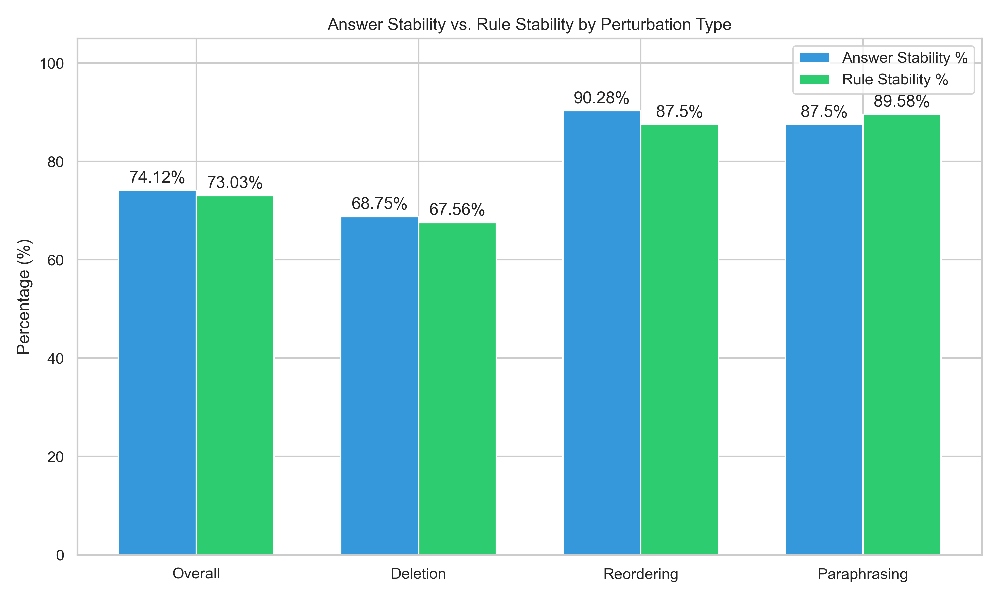
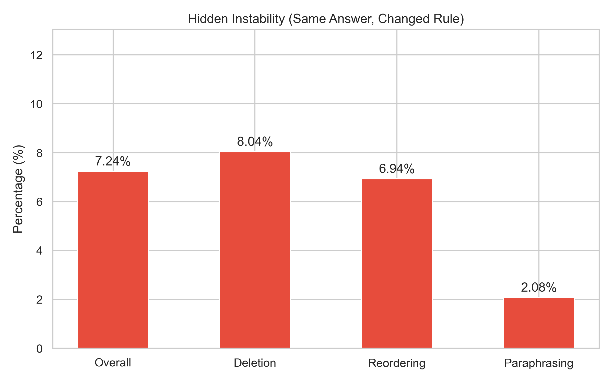

This report documents the final experimental findings on whether rule-based explanations in Retrieval-Augmented Generation (RAG) systems are as stable as the predictions they explain. We systematically perturbed the context and queries provided to the LLM and measured the stability of both the generated answer and the logical explanation (rule) using a strict LLM-as-a-Judge methodology (GPT-4o).
Core Research Question
Are rule-based explanations in RAG systems as stable as the answers they explain when the question or retrieved context is perturbed?
Finding: Yes. Explanation stability and prediction stability are tightly coupled. Overall Rule Stability tracks closely with Answer Stability.
2. Quantitative Results
Final Stability Metrics
Category
Total Trials
Rule Stability
Answer Stability
Hidden Instability
Overall
456
73.03%
74.12%
7.24%
Deletion
336
67.56%
68.75%
8.04%
Reordering
72
87.5%
90.28%
6.94%
Paraphrasing
48
89.58%
87.5%
2.08%
The following charts illustrate our quantitative findings across 456 perturbation trials (Deletion, Reordering, and Paraphrasing).

The Phenomenon of "Hidden Instability"
We specifically tracked instances where the prediction-level stability held (the model gave the same answer), but explanation-level stability failed (the model used completely different logic). As shown below, this occurs rarely when graded by a strict SOTA model.

3. Qualitative Examples
Below are examples from our dataset highlighting stable logic, broken logic, and the newly added paraphrasing performance.
Case Study A: Stable Logic (Reordering Perturbation)
Original Question: What year did the sports facility that the Portland Trail Blazers use open?
Base Rule:
The Portland Trail Blazers use the Moda Center as their sports facility. This is supported by the document stating that the Moda Center is the primary indoor sports arena in Portland and is the home of the Portland Trail Blazers. The arena opened in 1995.
Perturbed Rule (Graded: Stable):
The Portland Trail Blazers use the Moda Center as their sports facility. The document states that the Moda Center is the primary indoor sports arena in Portland, Oregon, and serves as the home of the Portland Trail Blazers. The arena was opened in 1995.
Case Study B: Hidden Instability (Deletion Perturbation)
Original Question: Are the band that released the album Nothing Lasts...But Nothing Is Lost and Space Tribe both from England?
Base Rule:
The band that released the album 'Nothing Lasts...But Nothing Is Lost' is Shpongle, which is described as an English psychedelic music project. Space Tribe is a Goa trance project from London, which is in England. Therefore, both are from England.
Perturbed Rule (Graded: Changed):
The album 'Nothing Lasts...But Nothing Is Lost' is by Shpongle, which is confirmed to be an English psychedelic music project. Space Tribe is described as an English trance project, confirming both are from England.
Case Study C: Semantic Robustness (Paraphrasing Perturbation)
Original Question: Are the band that released the album Nothing Lasts...But Nothing Is Lost and Space Tribe both from England?
Paraphrased Question: Do both the band behind the album Nothing Lasts...But Nothing Is Lost and Space Tribe originate from England?
Base Rule:
The band that released the album 'Nothing Lasts...But Nothing Is Lost' is Shpongle, which is described as an English psychedelic music project. Space Tribe is a Goa trance project from London, which is in England. Therefore, both are from England.
Perturbed Rule (Graded: Stable):
The band that released the album 'Nothing Lasts...But Nothing Is Lost' is Shpongle, an English psychedelic music project. Space Tribe is a Goa trance project from London, which is in England. Therefore, both originate from England.